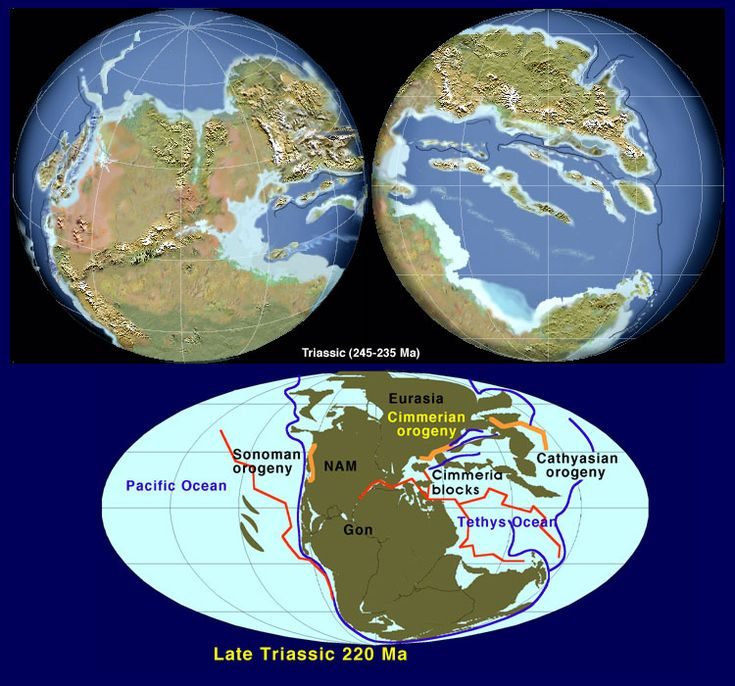
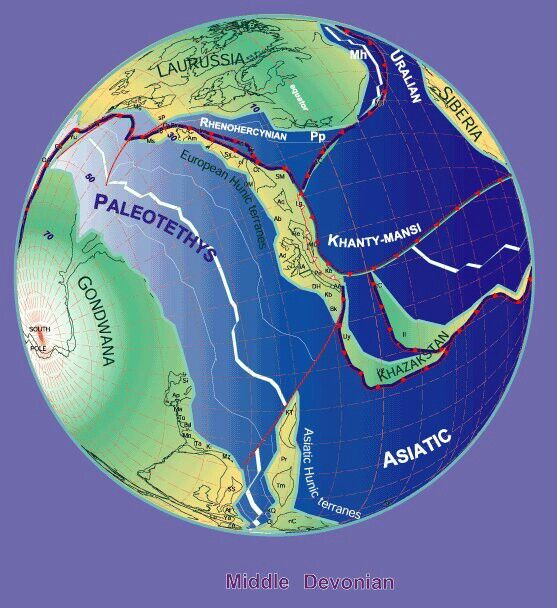
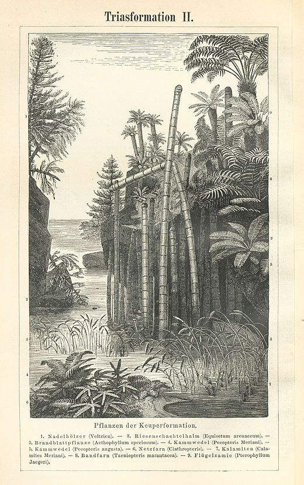
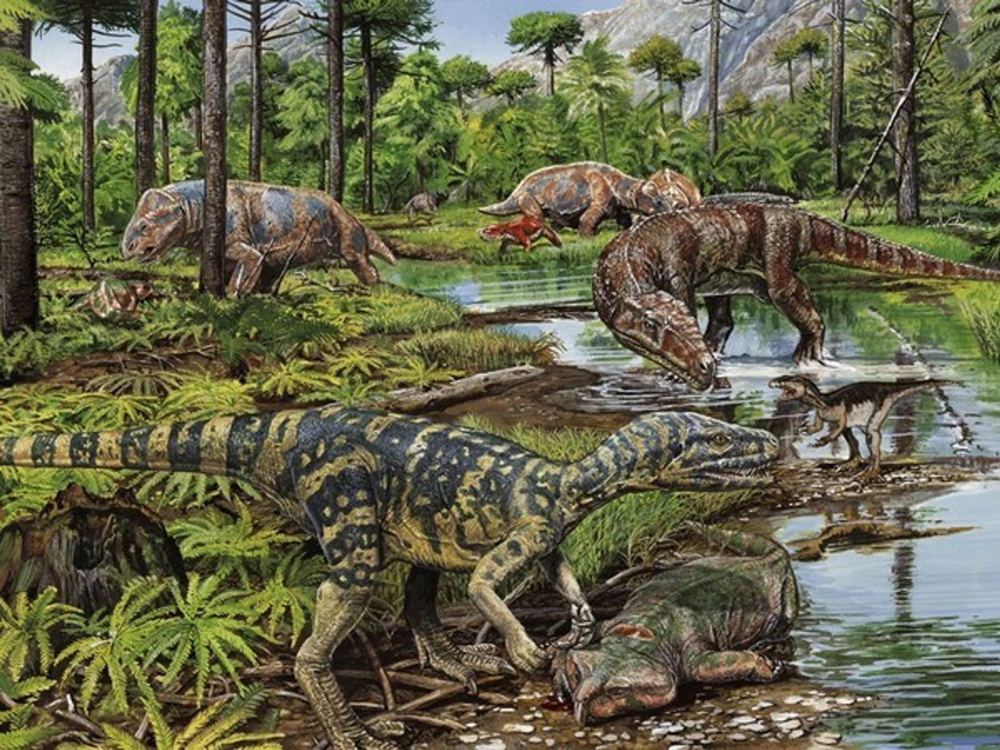
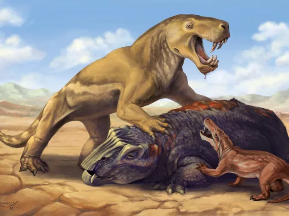
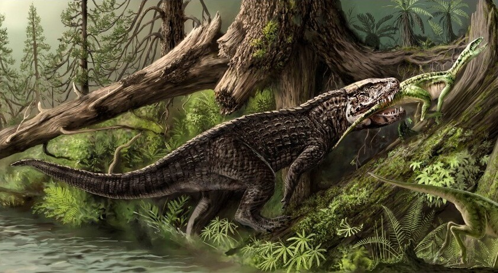
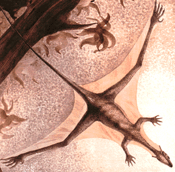
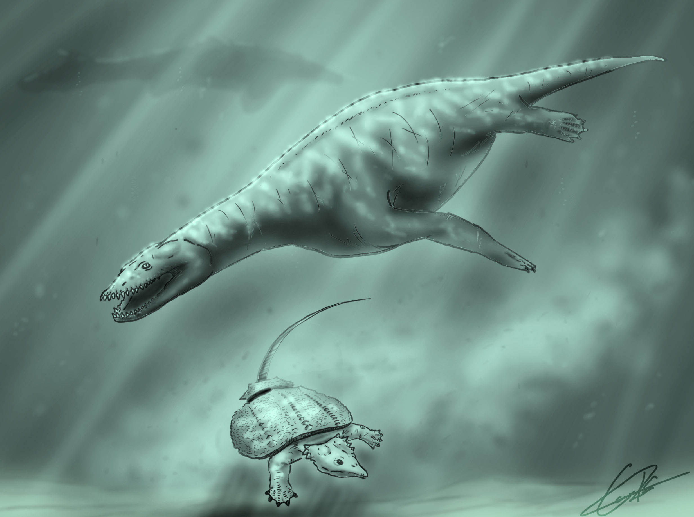
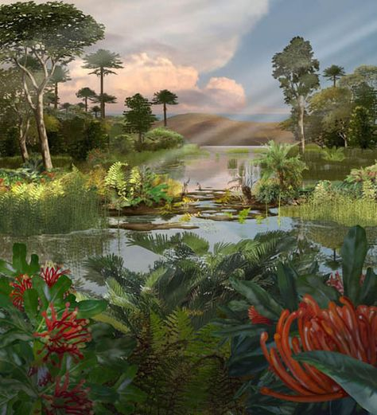

El Triasico
El Triásico (del griego triás, 'tres') es el primer sistema y período del Mesozoico en la escala temporal geológica. Sucede al Pérmico (último periodo del Paleozoico) y precede al Jurásico. Comenzó hace 251 millones de años y acabó hace 201 millones de años. Debe su nombre a la sucesión estratigráfica de los tres grupos de rocas que identificó el geólogo alemán Friedrich von Alberti en sus estudios en Alemania y Europa noroccidental en 1834: Buntsandstein, areniscas y conglomerados rojos; Muschelkalk, calizas y dolomías; y Keuper, arcillas y evaporitas.
Tanto el inicio como el final de este período están marcados por importantes eventos de extinción: la extinción masiva del Pérmico-Triásico y la del Triásico-Jurásico.
Es en los sedimentos de este período donde aparecen los fósiles de los primeros dinosaurios, representados por formas bípedas de pequeño tamaño, carnívoras. No obstante, a finales del periodo ya se habían diversificado a gran escala y se habían convertido en los vertebrados dominantes en todo el planeta, llevando a la extinción a grupos más primitivos, como los arcosaurios, y a los reptiles mamiferoides con escasas excepciones.
Los arcosaurios dominan en tierra como dinosaurios, en los océanos dominan los ictiosaurios y los notosaurios, y en el cielo los pterosaurios. Los cinodontos se hacen más pequeños y se asemejan cada vez más a un mamífero. Aparecen los primeros mamíferos y el orden Crocodilia. Plantas del grupo Dicroidium eran comunes en tierra. Muchos grandes anfibios acuáticos temnospóndilos. Ammonoideos ceratíticos extremadamente comunes. Aparecen los corales modernos y los peces óseos (teleósteos), así como muchos de los clados modernos de insectos.
Los primeros mamíferos, los cuales evolucionaron de los reptiles mamiferoides, hicieron su aparición en este período.
La deriva continental acercó los continentes; junto con la gran regresión marina del Triásico, fueron las dos causas de la formación del supercontinente Pangea. A principios del Jurásico las tierras emergidas volvieron a separarse. Debido a esta regresión, las plataformas continentales quedaron sobre el nivel del mar, lo que condujo, a su vez, al descenso de la biodiversidad marina que necesita profundidades relativamente someras.


Flora
Las plantas terrestres no experimentaron una extinción importante al final de la Era Paleozoica. La transición de los tipos paleozoicos recientes y mesozoicos comenzó antes del inicio de la Era Mesozoica. Así pues, las condiciones eran muy similares al Pérmico. Las plantas que florecieron en Laurasia estaban adaptadas a su clima seco y cálido: cicadáceas. Entre la vegetación arbórea había algunas coníferas y ginkgos. Los helechos predominaban en las zonas húmedas, junto con cicadáceas con una morfología similar a las palmeras y algunos predecesores de los pinos actuales. Gondwana, mucho más húmeda, estaba poblada por bosques de helechos gigantescos y coníferas voluminosas.
Existen pruebas de que los escarabajos estaban implicados en la polinización de algunas gimnospermas, pero por lo demás había pocas de estas plantas que trataran de atraer a los insectos; incluso parece como si los conos de las cícadas estuvieran diseñados para ahuyentarlos. Más de la mitad de las especies conocidas de insectos estaban equipadas para perforar, mordisquear y succionar los cuerpos de las plantas.

PaleoZoologia
Primeros dinosaurios
Aparecieron hacia el final del Triásico (~230 millones de años atrás), inicialmente como formas pequeñas y bípedas.
Ejemplos:
Eoraptor: uno de los dinosaurios más antiguos conocidos.
Herrerasaurus: carnívoro bípedo de Sudamérica.
Coelophysis: ágil, delgado, y uno de los primeros terópodos verdaderos.
Aunque ya existían, los dinosaurios aún no eran dominantes durante la mayor parte del Triásico.

Primeros mamíferos y sinápsidos
Evolucionaron a partir de reptiles similares a los mamíferos llamados cinodontos.
Eran animales pequeños, nocturnos, parecidos a musarañas.
Ejemplo: Morganucodon (aunque algunos autores lo sitúan ya en el Jurásico temprano).
También estaban presentes:
Lystrosaurus: herbívoro sobreviviente de la extinción del Pérmico, muy común al inicio del Triásico.
Cynognathus y Thrinaxodon: cinodontos carnívoros con características mamalianas.

Antepasados de los cocodrilos
En el Triásico, los crocodilomorfos eran mucho más variados que hoy.
Algunos eran bípedos y veloces, no semiacuáticos como los cocodrilos actuales.
Ejemplo: Postosuchus, un gran depredador carnívoro del grupo de los rauisuquios.

Reptiles voladores: primeros pterosaurios
Los pterosaurios aparecieron a finales del Triásico, siendo los primeros vertebrados voladores.
Ejemplo: Eudimorphodon, con dientes adaptados a una dieta insectívora o piscívora.
Tenían alas formadas por una membrana de piel extendida entre un dedo alargado y el cuerpo.

Reptiles marinos
Durante el Triásico también comenzaron a poblar los océanos diversos reptiles marinos, muchos de los cuales evolucionaron de reptiles terrestres.
Ejemplos destacados:
Ictiosaurios: como Shonisaurus o Mixosaurus, con cuerpos parecidos a delfines.
Notosaurios: reptiles semiacuáticos, como Nothosaurus.
Placodontos: de cuerpo ancho y dientes planos, adaptados a triturar moluscos (parecidos a manatíes con caparazón).
Tanystropheus: famoso por su larguísimo cuello, posiblemente pescador de emboscada en aguas poco profundas.

auna marina e invertebrados
Ammonites y belemnites: moluscos con conchas espirales o internas.
Braquiópodos, crinoideos y bivalvos colonizaban los fondos oceánicos.
Corales hexacorales comenzaron a construir arrecifes, en reemplazo de los corales tabulados y rugosos del Paleozoico.p>
Extincion
El clima del Triásico fue generalmente caluroso y seco, lo que dio lugar a la formación de desiertos y depósitos de evaporitas. El gran tamaño de Pangea limitó el efecto moderador del océano; su clima continental era altamente estacional, con veranos muy calurosos e inviernos muy fríos. Probablemente hubo fuertes monzones en el ecuador, a veces conocidos como megamonzones pangeanos. No hay evidencia de glaciación cerca o en cualquiera de los polos; de hecho, las regiones polares eran aparentemente húmedas y templadas, un clima adecuado para criaturas similares a los reptiles.
El Triásico puede haber sido mayoritariamente un período seco, pero existen pruebas de que estuvo marcado por varios episodios de aumento de las lluvias en las latitudes tropicales y subtropicales del mar de Tetis y sus alrededores. Se conocen sedimentos y fósiles que sugieren un clima más húmedo desde el Anisiense hasta el Ladiniense en el dominio del Tetis, y desde el Carniense hasta el Rhaetiense en un área mayor que incluye también el dominio boreal (por ejemplo, las actuales islas Svalbard), el continente de América del Norte, el bloque del sur de China y Argentina.
El episodio de clima húmedo mejor estudiado, y probablemente el más intenso y extendido, fue el evento pluvial Carniense. Un estudio de 2020 encontró burbujas de dióxido de carbono en rocas basálticas que se remontan al final del Triásico, y concluyó que la actividad volcánica ayudó a desencadenar el cambio climático en este período.
